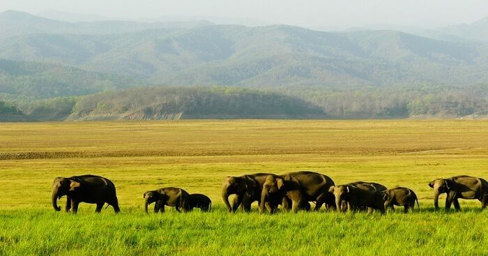

Far, far away in the land of North East is a utopia where you will find the most exotic wildlife living in harmony. Manas National Park, Assam is the only place to be distincted as biosphere reserve, a natural heritage site, Project Tiger Reserve, and Project Elephant Reserve all at the same time. Located in the foothills of the Eastern Himalayas, the park is flanked by the giant Manas River separating it from Royal Manas National Park in Bhutan. Home to the Royal Bengal Tiger and Wild Buffaloes, it offers you a myriad of activities to appreciate the diversity of the region. If you want a wholesome and fulfilling experience amidst nature, Manas National Park in India is the place to be.
Attractions In Manas National Park: River Rafting Elephant Safari Jeep Safari
Best Time To Visit:November to April
The best time to visit is from November to April. The weather remains pleasant during this time of the year, thereby ensuring tourists have the delight of experiencing the diverse fauna and flora of the park.
